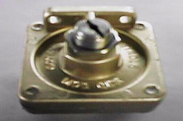
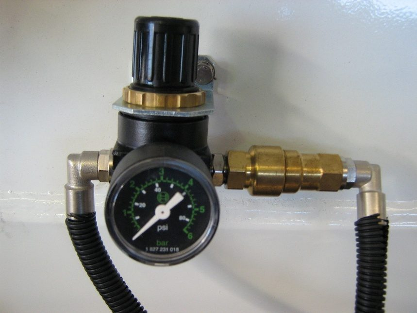
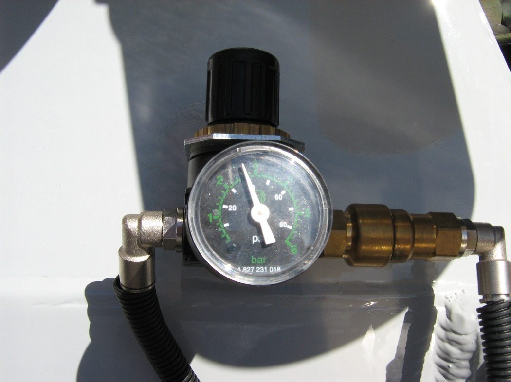

Source: CHAPTER 5 - WATER SYS.docx — Cesco Truck Mounting Instructions, Oct 2026 set. Read status: text ok; 3 embedded images.
Tank supplied mounted or loose, fittings loose; hold-back valve per VSB6 on auxiliary tank, port 2 in / port 3 out, opens 620 kPa (90 psi) closes 607 kPa (88 psi); J-brackets bolted never welded; drilling rules (≤0.5 mm oversize, ≥60 mm from flange); regulator approx 35 psi, ≤80% of tank design pressure (310 kPa / 45 psi).
Water tank mounting
Tank supplied mounted to the mixer where practical, or loose; fittings supplied loose in both cases. Plumbing per details supplied by Cesco Australia Ltd.
Hold-back valve


- Tank pressurised with air from the truck air braking system; hold-back valve located and calibrated per the Vehicle Standards Bulletin (VSB6).
- Always select an auxiliary tank, not the primary tank; use a fitting as high as possible in the tank (reduces dirt/rust entering hold-back valve or regulator).
Source text “While the position of the hold back valve will be governed by availability of a suitable fitting in the tank, the preference is to select a fitting as high as possible in the tank, thus reducing the risk of dirt & rust from the truck air system entering the hold back valve or the regulator.”
- Air flow always into port 2, out of port 3 (port 2 connected to truck tank).
- Valve should be checked to open at 620 kPa (90 psi) and close at 607 kPa (88 psi) to maintain safe brake-system pressure.
- Figure: one embedded photo (EMF) of a valve fitting in this section (image-only, unlabelled).
Tank mounting to chassis
- J-brackets must always be bolted. NEVER WELD TO THE TRUCK CHASSIS.
- Chassis drilling principles (as stated in this chapter):
- Holes no more than 0.5 mm larger than bolt.
- Not closer than 60 mm from top or bottom flange.
- ≥ 50 mm between centres or from existing holes/bolts/rivets.
- No more than 2 holes in a vertical line. Never drill top or bottom flange.
Regulator / check valve
- Supplied as an assembly with check (non-return) valve and pressure gauge; connect hoses for correct flow direction (both marked).


- Not factory set — installer adjusts: with truck air available, lift black knob and set approx 35 PSI. If tank relief valve blows, adjust down slightly; must not cause constant blow-off.


- Figures: 2 photos of regulator/gauge assembly.
IMPORTANT NOTE — tank pressure
- Check the design pressure on the tank's mandatory specification plate before adjusting.
- Never exceed 80% of design pressure. If design pressure not specified, do not adjust.
- Cesco mixer tanks: design pressure 310 kPa (45 psi); recommended pressures apply to these tanks only.
Full source text — verbatim from CHAPTER 5 - WATER SYS.docx
Complete text of the source document in source order (spelling as in the source), for checking against the article above. Text boxes and figure positions are marked.
Water System.
Water tank Mounting
The water tank will be supplied mounted to the mixer where practical or may be supplied loose. In both cases, the fittings will be supplied loose. Plumbing must be carried out in accordance with the details supplied by Cesco Australia Ltd.
Hold-back Valve
[Figure: image1.emf — shown above]
The water tank is pressurised with air from the truck air braking system. As such the hold-back valve must be located and calibrated in accordance with the Vehicle Standards Bulletin (VSB6).
When fitting the hold back valve, always select an auxiliary tank, rather than the primary tank. While the position of the hold back valve will be governed by availability of a suitable fitting in the tank, the preference is to select a fitting as high as possible in the tank, thus reducing the risk of dirt & rust from the truck air system entering the hold back valve or the regulator. Air flow at the holdback valve must always be ‘into port 2, out of port 3’ ie port 2 is connected to the truck tank.
THE VALVE SHOULD BE CHECKED TO OPEN AT 620KPA (90P.S.I.) AND CLOSE AT 607KPA (88P.S.I.) TO MAINTAIN SAFE PRESSURE IN THE BRAKE SYSTEM.
Where J brackets are supplied to mount the tank to the truck chassis, they must always be bolted. NEVER WELD TO THE TRUCK CHASSIS.
The general principles of drilling the truck chassis are :-
Holes should be no more than 0.5mm larger than bolt.
Hole diameter must not be closer than 60mm from top or bottom flange.
Holes must be not less than 50mm between centres, or from existing holes, bolts or rivets.
Drill no more than 2 holes in a vertical line.
Never drill holes in the top or bottom flange.
Regulator / Check Valve
The regulator is supplied as an assembly, complete with check (non-return) valve & pressure gauge.
Hoses must be connected to ensure air flow direction is correct. Both the check valve & regulator are marked.
[Figure: image2.jpeg — shown above]
The regulator is not factory set, & must be adjusted by the installer.
With the truck air pressure available, lift the black knob & adjust the pressure to approx 35 PSI. If the relief valve fitted to the tank blows, adjust the pressure down slightly. The regulator must not be set at a pressure which causes the relief valve to blow constantly.
[Figure: image3.jpeg — shown above]
IMPORTANT NOTE
Before adjusting the pressure to any tank, always check the design pressure on the tank, which will be nominated on the mandatory specification plate attached to the tank. Never adjust the pressure higher than 80% of the design pressure. If the design pressure is not specified, do not adjust. The design pressure of tanks fitted to Cesco mixers is 310kPa (45p.s.i.) and the recommended pressures above apply to these tanks only.